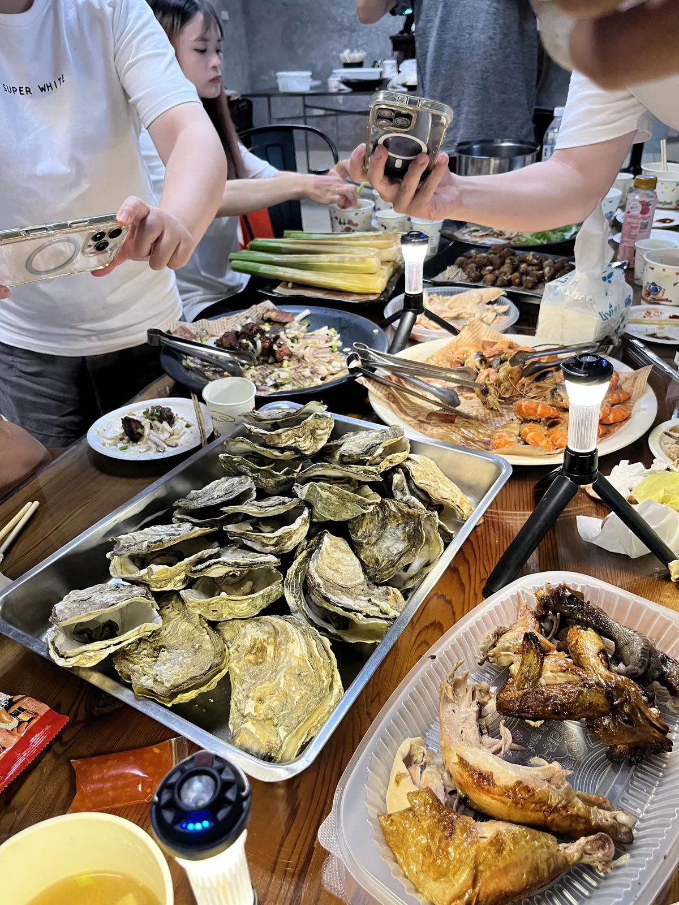

2023.08.13
突然來探班的人
那時候還沒有在一起。你突然買了甜甜圈來公司找我，後來我們才慢慢開始聊天。
「故事可能就是從這邊開始的？」

故事可能就是
從這邊開始的？
our little diary
three years with you
tap to open
2023.08.13
那時候還沒有在一起。你突然買了甜甜圈來公司找我，後來我們才慢慢開始聊天。
「故事可能就是從這邊開始的？」
我喝醉了，有人從學校開車來載我回家。
夜市、虎頭山，還有一顆我根本沒看到的流星 ☆
「我是多特別？」
「特別喜歡ㄉ那種。」


白天，我們去了動物園。

晚上去吃藏壽司。
而且還抽到了 P助，當然要好好留一張照片。
後來回到我家門口，外面還下著雨。
你問我：
「要不要當我女朋友？」
我一開始還說不要。
……然後還是答應了。
OUR DIARY
@ 貴子公園
從很多很多小事情裡，
越來越喜歡你。

「那要結婚嗎？」
「要。」


2024.02.16
最後一篇寶寶日記，剛好是我們小小吵架的一天。
有人到了地方卻沒有跟我說，聊著聊著就把我給遺忘了。
後來米菇有跟我道歉。現在回頭看，連這種小小的不開心也變成日記裡的一部分。
And then,
I stopped writing.
我後來沒有繼續寫寶寶日記。
但我們還是一起製造了好多回憶。


光頭米菇登場。


還好這次有看到花郎！小猴子也是這一天拍到的。

原本只是很普通地買了刮刮樂，結果米菇真的刮中十萬。
看到的時候第一個反應不是尖叫，是一直確認到底有沒有看錯。這大概會是我們很久以後還會一直拿出來講的事件。
2026 最荒謬、也最幸運的一天之一。

本來我是為了 LNGSHOT 去的，但棒球本身也比想像中有趣很多。
而且米菇也覺得 LNGSHOT 的歌很好聽 ♡
MORE MEMORIES
不是每一天都有寫進日記，但照片有偷偷幫我們記住。





2026.10.08

1097 DAYS · counting 10.08 as day 1
To. 米菇
這裡留給三週年的你。
最後一封信，等 Niku 寫完再放進來 ♡
Niku
2026.10.08